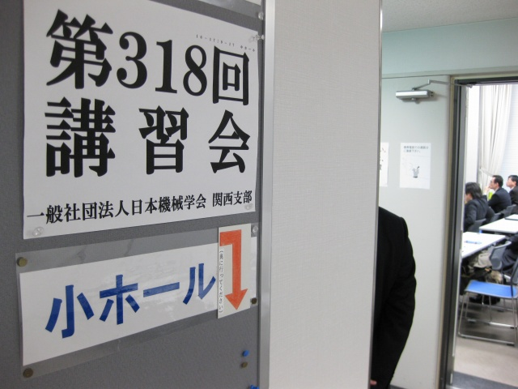

M1、K城君が「実務者のための騒音防止技術」に参加しました。T永くんも参加した方が良かったですが、戻ってきたK城君のレクチャーでバッチリとフォローできました。卒論に追われている現状では、行ってる余裕が無かった？
科学センターが会場です
隣はウツボ公園
みっちり2日間！
OHP！一番分かり易かったとか
休憩時間は靫公園でまったり
展示会で最新機器にふれる

よどやばし、音楽鑑賞へ行かねば
中之島公会堂、いそいで！
| ・ 第318回講習会 実務者のための騒音防止技術 (H24.01.16-17) | |||
M1、K城君が「実務者のための騒音防止技術」に参加しました。T永くんも参加した方が良かったですが、戻ってきたK城君のレクチャーでバッチリとフォローできました。卒論に追われている現状では、行ってる余裕が無かった？ |
|||
|
科学センターが会場です |
隣はウツボ公園 | ||
|

みっちり2日間！ |
OHP！一番分かり易かったとか | ||
|
休憩時間は靫公園でまったり |
展示会で最新機器にふれる | ||
|
よどやばし、音楽鑑賞へ行かねば |
中之島公会堂、いそいで！ | ||